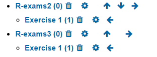

Chapter 6 To do list
To be explored. However, “Cloze” type can handle several questions types in the same file inside an R list.
The process of exercise creation as motivation to students. – needs a game behind?
In RMarkdown, how to specify backticks and avoid “r something” to be executed?
“Source” and “Visual” modes: “Visual” mode changes the source code without warning!! It’s dangerous and a bug report shoulbe be left in RStudio github issues.
How to specify a Category for moodle when building an exam?

case with all question types: lm.Rmd, lm2.Rmd, boxhist2.Rmd, fourfold2.Rmd,
Outra forma de pensar e organizar: exercícios usando VAR
Use of
envir =.GlobalEnvOnly file question is working and not essay question type
Estudar https://www.r-exams.org/assets/posts/2018-12-09-confint3//confint3.Rmd